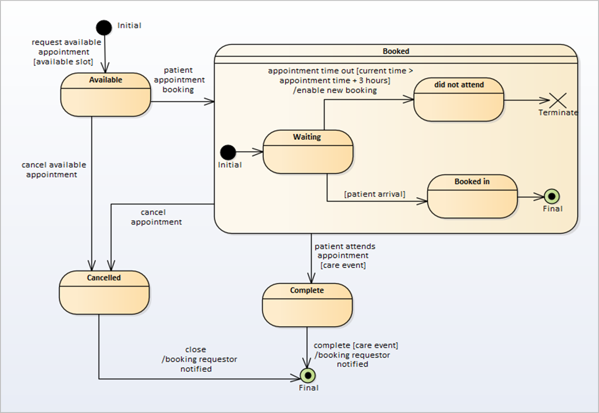

A UML State Machine Diagram is a behavioural modelling technique used to analyse the lifecycle of an business entity or object.
State Machine Diagrams illustrate how an entity can move (transition) between States, classifying its behaviour according
to transition triggers and constraining guards.
state machine diagram example
state machine diagram example
A typical elaboration for a UML State Machine Diagram (with Elements and Transitions)
The purpose of a UML State Machine Diagram is to represent and document the States an entity can be in during a business lifecycle,
as well as the triggers and activities that must take place when a change of state occurs.
It is a useful technique to use where an entity has a complex lifecycle. States can be identified by considering the attributes
of an entity and their potential boundaries. Transitions by considering the business rules that apply when an entity is in
a specified state. It is not necessary to apply this technique to all business entities as generally most have simple states.
A typical example might be the various states of an appointment, such as ’available‘, ’booked‘, ’completed‘ and ’cancelled‘,
as well as what must happen to allow the movement between those states (see figure: state machine diagram example). It can also show the interrelated states within a state machine (example of states within "booked").
UML State Machines Diagrams are maintained in a named package which contains:
|
• |
State elements (simple state, composite state, and state machines) — representing the various different state conditions:
|
◦
|
States can have regions which contain states and transitions
|
|
|
• |
Transitions (as Connectors)
|
|
• |
Psuedo states represented as elements: initial, terminate, entry point, exit point, choice, join, fork, junction, history.
|
The construction of UML State Machine Diagrams are defined by their Core Notations.
Types of UML State Machine Diagram Artefactsspacer
text
The types of UML State Machine Diagram related Artefacts currently defined for use by the Data Products Analysis Methodology include:
Artefact TitleAfter p in entry
|
|
|